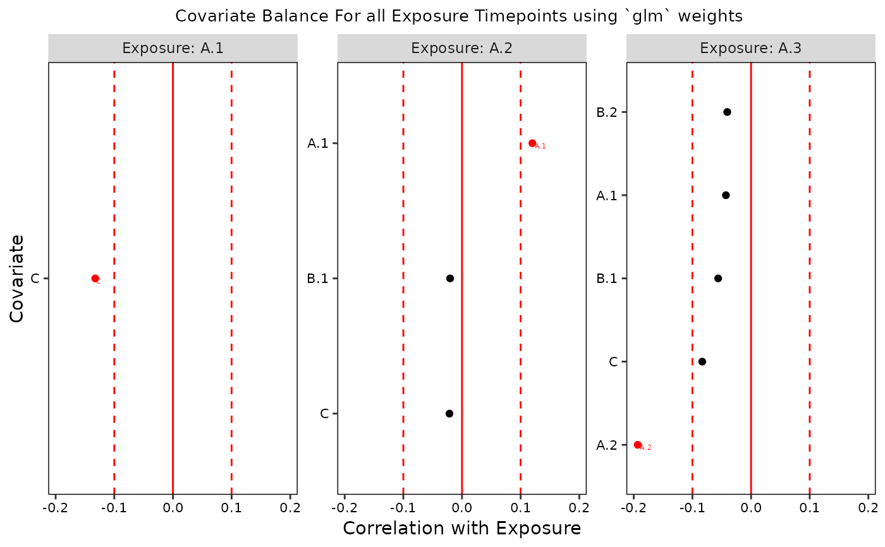
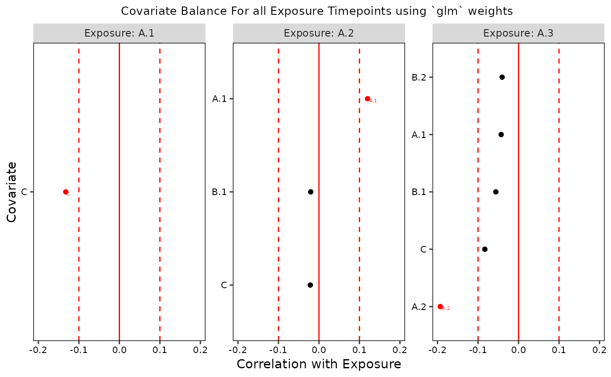

Draws on functions from the cobalt package to quantify the relations between exposure and confounders at each exposure time point according to the guidelines from Jackson, 2016 on how to assess balance for time-varying exposures.
Usage
assessBalance(
data,
obj,
weights = NULL,
balance_thresh = NULL,
imp_conf = NULL,
verbose = FALSE,
save.out = FALSE,
home_dir = NULL
)
# S3 method for devMSM_bal_stats
print(x, i = 1, t = TRUE, ...)
# S3 method for devMSM_bal_stats
summary(object, i = 1, t = TRUE, ...)
# S3 method for devMSM_bal_stats
plot(x, i = 1, t = TRUE, ...)Arguments
- data
data in wide format as: a data frame, list of imputed data frames, or
midsobject from themicepackage- obj
initialized MSM object from
initMSM()- weights
(optional) list of IPTW weights output from
createWeights()- balance_thresh
(optional) one or two numbers between 0 and 1 indicating a single balancing threshold or thresholds for more and less important confounders, respectively (default = 0.1)
- imp_conf
(optional) list of variable names reflecting important confounders, required if two balance thresholds are supplied
- verbose
(optional) TRUE or FALSE indicator for printing output to console (default is FALSE)
- save.out
(optional) TRUE or FALSE indicator to save output and intermediary output locally (default is FALSE)
- home_dir
path to home directory (required if save.out = TRUE)
- x
devMSM_bal_stats object from
assessBalance- i
For multiply imputed datset,
iselects which imputation to print results for. Default isi = 1. Withi = TRUE, all imputed datasets will be looped over.- t
Which exposure variable to use. Can either be an index from 1, ..., num exposures or a string containing the exposure varaible name (e.g.
"A.3"). Witht = TRUE, all exposure variables will be looped over.- ...
ignored
- object
devMSM_bal_stats object from
assessBalance()
Value
a list containing balance statistics as a dataframe. It is the length of the number of datasets (1 for a data.frame or the number of imputed datasets)
See also
cobalt package, https://cran.r-project.org/web/packages/cobalt/index.html; Jackson, 2016 for more on assessing balance for time-varying exposures, https://pubmed.ncbi.nlm.nih.gov/27479649/
Examples
library(devMSMs)
data <- data.frame(
ID = 1:50,
A.1 = rnorm(n = 50),
A.2 = rnorm(n = 50),
A.3 = rnorm(n = 50),
B.1 = rnorm(n = 50),
B.2 = rnorm(n = 50),
B.3 = rnorm(n = 50),
C = rnorm(n = 50),
D.3 = rnorm(n = 50)
)
obj <- initMSM(
data,
exposure = c("A.1", "A.2", "A.3"),
ti_conf = c("C"),
tv_conf = c("B.1", "B.2", "B.3", "D.3")
)
f <- createFormulas(obj, type = "short")
# Prebalance
b <- assessBalance(data = data, obj = obj)
print(b)
#>
#> +----------+-----------+---------------+------------+----------+
#> | exposure | covariate | std_bal_stats | bal_thresh | balanced |
#> +==========+===========+===============+============+==========+
#> | A.1 | C | 0.0928 | 0.1 | 1 |
#> +----------+-----------+---------------+------------+----------+
#> | A.2 | C | 0.2457 | 0.1 | 0 |
#> +----------+-----------+---------------+------------+----------+
#> | A.2 | B.1 | -0.0223 | 0.1 | 1 |
#> +----------+-----------+---------------+------------+----------+
#> | A.2 | A.1 | 0.3289 | 0.1 | 0 |
#> +----------+-----------+---------------+------------+----------+
#> | A.3 | C | 0.0321 | 0.1 | 1 |
#> +----------+-----------+---------------+------------+----------+
#> | A.3 | B.1 | -0.0852 | 0.1 | 1 |
#> +----------+-----------+---------------+------------+----------+
#> | A.3 | B.2 | 0.2001 | 0.1 | 0 |
#> +----------+-----------+---------------+------------+----------+
#> | A.3 | A.1 | 0.0468 | 0.1 | 1 |
#> +----------+-----------+---------------+------------+----------+
#> | A.3 | A.2 | -0.106 | 0.1 | 0 |
#> +----------+-----------+---------------+------------+----------+
#>
#> Table: Balance Stats for all Exposure Time Periods
# returns ggplot of balance stats for all exposure variables
plots <- plot(b, t = TRUE)
# can plot only specific exposure time periods
plot(b, t = "A.3")
 plot(b, t = 3)
plot(b, t = 3)
 # Weighted
w <- createWeights(data = data, obj = obj, formulas = f)
bw <- assessBalance(data = data, obj = obj, weights = w)
print(bw)
#>
#> +----------+-----------+---------------+------------+----------+
#> | exposure | covariate | std_bal_stats | bal_thresh | balanced |
#> +==========+===========+===============+============+==========+
#> | A.1 | C | -0.0445 | 0.1 | 1 |
#> +----------+-----------+---------------+------------+----------+
#> | A.2 | C | 0.049 | 0.1 | 1 |
#> +----------+-----------+---------------+------------+----------+
#> | A.2 | B.1 | -0.1034 | 0.1 | 0 |
#> +----------+-----------+---------------+------------+----------+
#> | A.2 | A.1 | 0.1557 | 0.1 | 0 |
#> +----------+-----------+---------------+------------+----------+
#> | A.3 | C | -0.056 | 0.1 | 1 |
#> +----------+-----------+---------------+------------+----------+
#> | A.3 | B.1 | -0.1114 | 0.1 | 0 |
#> +----------+-----------+---------------+------------+----------+
#> | A.3 | B.2 | 0.0971 | 0.1 | 1 |
#> +----------+-----------+---------------+------------+----------+
#> | A.3 | A.1 | 0.0133 | 0.1 | 1 |
#> +----------+-----------+---------------+------------+----------+
#> | A.3 | A.2 | -0.0794 | 0.1 | 1 |
#> +----------+-----------+---------------+------------+----------+
#>
#> Table: Balance Stats for all Exposure Time Periods
plot(bw)

# Weighted
w <- createWeights(data = data, obj = obj, formulas = f)
bw <- assessBalance(data = data, obj = obj, weights = w)
print(bw)
#>
#> +----------+-----------+---------------+------------+----------+
#> | exposure | covariate | std_bal_stats | bal_thresh | balanced |
#> +==========+===========+===============+============+==========+
#> | A.1 | C | -0.0445 | 0.1 | 1 |
#> +----------+-----------+---------------+------------+----------+
#> | A.2 | C | 0.049 | 0.1 | 1 |
#> +----------+-----------+---------------+------------+----------+
#> | A.2 | B.1 | -0.1034 | 0.1 | 0 |
#> +----------+-----------+---------------+------------+----------+
#> | A.2 | A.1 | 0.1557 | 0.1 | 0 |
#> +----------+-----------+---------------+------------+----------+
#> | A.3 | C | -0.056 | 0.1 | 1 |
#> +----------+-----------+---------------+------------+----------+
#> | A.3 | B.1 | -0.1114 | 0.1 | 0 |
#> +----------+-----------+---------------+------------+----------+
#> | A.3 | B.2 | 0.0971 | 0.1 | 1 |
#> +----------+-----------+---------------+------------+----------+
#> | A.3 | A.1 | 0.0133 | 0.1 | 1 |
#> +----------+-----------+---------------+------------+----------+
#> | A.3 | A.2 | -0.0794 | 0.1 | 1 |
#> +----------+-----------+---------------+------------+----------+
#>
#> Table: Balance Stats for all Exposure Time Periods
plot(bw)
